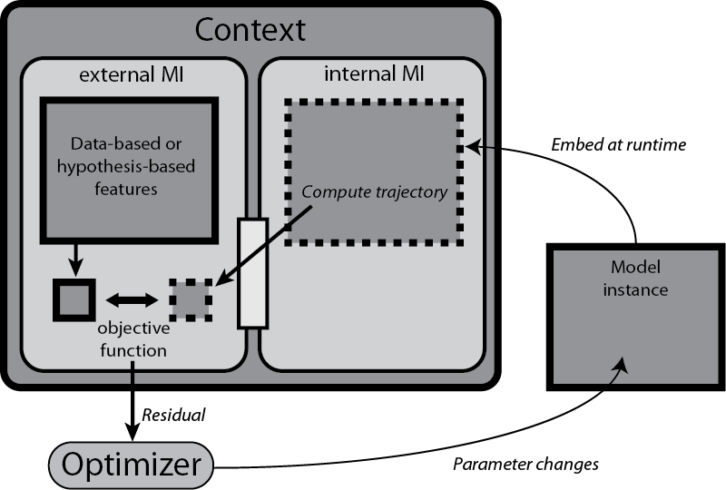

Site navigation:
Contents
The goal of a model interface is to provide a particular "view" of model behavior, and can also contain contextual information that can be used to verify the consistency of that view according to specific criteria. This is a powerful way to express model and parameter estimation problems. Interfaces also provide the means for succinctly defining hybrid model systems, as they can be used to represent the checking of sub-domain boundaries and the switching criteria between the sub-systems.
It is the job of an interface to create the "view" of a model's trajectory under specific circumstances (e.g. a particular fixing of parameter values or external input conditions), as it exposes only this view of its embedded model instance. In simple cases, the view may be the model's original trajectory, or it may involve post-processing of the trajectory to provide a view in terms of salient features that are extracted from the trajectory and quantified.
In data-driven modeling, you might be trying to infer a good dynamical systems model for a physical system based on experimental tests on the system as a black box. You might provide a set of stimuli to the system and measure its responses. In this context, your view of the system is through the blinkered eyes of these test results. Correspondingly, you might try to optimize your model to reproduce these input-output relationships by setting it up to receive virtual stimuli and output virtual responses of a kind that correspond to the types of stimuli and measurements made in the experiment. These may not correspond directly to the model's inherent state variables, much in the same way that we talk about "controllable" and "observable" variables in control theory. The types of input and output to the model are created through a transformation in to and out of the model through an interface that makes it compatible with the viewpoint of these experiments. The transformation is a function or algorithm executed by the interface.
For the same physical system, and the same model, you may also be able to conduct entirely different types of test, involving different features of the system. Without coming up with a different model that is rooted in the language of these tests, you might create a different transformation of the model variables so as to have a different viewpoint, i.e. interface, associated with the model for the purposes of these new tests. The entire context of the model now consists of these two different viewpoints of the model, and its consistency relies on specific conditions on the model's behavior being met in each case.
Now, assume you have collected some data from both of types of test. You simulate your model under the same test conditions and find that, through the viewpoints you have created, that it does not behave in the same way as the physical system. This is a failure of consistency. According to salient features that you define for your modeling problem, you can make quantifiable measurements of the discrepancy of the model behavior from the experimentally observed behavior may allow you to make an intelligently chosen adjustment to your model, and you can re-evaluate the consistency of the model with the data through the interfaces.
In a philosophical sense, a set of input-output data for a physical system is being used as a simplistic view of that system's mechanism under the specific experimental conditions. This is in the same way that we can define a scalar function by a list of pairs of input and output values. (Of course, such a viewpoint is never complete if the system or the function is continuously defined.) This is called an "external" interface in PyDSTool, defined by the MProject.extModelInterface class.
A different view of a model can be obtained by making a reduction to another, simpler model. Typically, this involves transforming model variables and parameters, maybe replacing some with static functions or values, even ignoring them. The relationship between the two models is also an interface, no longer with a static set of data points, but with another continuously-defined dynamic model. This is called an "internal", corresponding to MProject.intModelInterface.
In the above example, the external interface for the data will contain the conditions (see below) that will be evaluated on a test trajectory generated by a model, extracted via its internal interface. There would be no need for the internal interface to contain conditions of its own if it is not a reference from which to evaluate another model's output.
In a similar way, a hybrid model that is made up of different sub-models can be thought of as a set of specific viewpoints of the whole model, each involving its own model representation and based in a specific context that has to be consistent with its use (variables and parameters) and the criteria of other sub-models. Thus, we can also define hybrid models using internal interfaces.
In any of these two cases, one viewpoint can be checked for consistency against another. In PyDSTool, this is done by evaluating one interface object's criteria against the other's viewpoint through a simple object method call.
If an interface requires specific alterations to a model's parameters, initial conditions, or trajectory length, that may be a function of the "standard" values of these passed by the user or objective function to the model, then return an updated version of these as dictionaries from an initialize_model method that you place in your interface sub-class.
To define the transformation of the interface, users can perform the post-processing of a trajectory passed out of a Model object by creating a postprocess_test_traj method of a sub-class of ModelInterface. Use the numeric_to_traj to render the numerical result (e.g. an array) as a Trajectory (all output from a model interface must be an instance of this class). This design is still in development, and may be a bit clunky and inefficient in some circumstances - any feedback is appreciated. The original data points can be extracted using the sample method with no other arguments.

A model context is a collection of criteria used to measure from and verify a model. Each criterion is a condition object associated with a model interface that defines a particular view of the model. Evaluation of a condition object on a model determines a truth value from testing features in trajectory objects (defined by the Feature class). The diagram above shows a schematic example application of a Context during a parameter estimation or other model estimation task.
A context is evaluated on a particular model object, and will return a truth value based on the success of all its conditions evaluated on the appropriate views of the model. The conditions evaluate whether a set of desired features are present and whether a set of undesired features are not present. This is specified by a dictionary mapping feature objects to a truth value: True indicates that the feature is desired.
The results of features belonging to a condition are stored in the condition's results attribute, each in a sub-attribute having the name of the feature.
Note that for contexts built from multiple interfaces but sharing a common basic model trajectory, these trajectories are not re-computed upon evaluation of each interface, provided the interfaces do not make unique changes to the defining arguments of a trajectory computation (parameters, initial conditions or time interval).
A usual user-definable override is an interface's prepare_conditions method. This is called automatically by that interface's evaluate method before evaluating a test trajectory. The method takes the target interface and trajectory as arguments, and so provides user-defined access to pre-processing of the trajectory for all the condition's features before evaluation.
Features in a trajectory may be merely present or not (qualitative features), or may have a numerical measure associated with them (quantitative features). Features may be structured (i.e., hierarchically complex), and may make use of metric objects to make quantified measurements that become available for parameter estimation objective functions.
Although all features must return true or false when evaluated, they may also record quantitative information about the feature they measure. Some of this information may only be available (and relevant) if the feature evaluated to True.
Note that for structured features, sub-features might only evaluate data previously derived from the trajectory by super-features, and can ignore the obligatory traj argument passed to evaluate, which will always be a reference to the original interface's output test trajectory.
If you want quantitative results from a feature to be used as part of an objective function, create an instance of a metric and place it in the metric attribute of a feature instance in a user-defined _local_init method. Then override with an evaluate method in the feature that calls the metric with a suitable pair of arguments (usually, one corresponds to the reference data, the other to the test data). Typically, one returns whether the metric distance evaluated for the particular test data falls within a specified tolerance (often self.pars.tol).
When a metric is created, it must be accompanied by the attribute metric_len in the feature, which is a pre-defined fixed length of the array that the metric returns.
In order for a feature to access feature-specific qualities of the reference trajectory (that have typically already been computed), the user-definable postprocess_ref_traj method can record or create a feature-specific version of the reference trajectory, and record other data in the pars (not results!) attribute (which will get propagated back to the super features). This method is called automatically while the feature initializes its reference trajectory.
All feature-specific parameters are stored in the pars attribute (an args dict-like object), and the results in the results attribute (also an args object). In addition, for structured features, the super-feature's parameters and any of its existing results are available as the super_pars and super_results attributes (the feature should not change these).
The following three user-defined methods should be placed in a feature class, and are all functions only of the trajectory passed to them.
If the feature needs to be initialized with data not specific to an individual trajectory to be evaluated, there is no need to override the feature's __init__ method. Instead, just define a _local_init method, taking no arguments, that will automatically be called at the end of the regular initialization process.
Note that, unless overridden by user-defined evaluation methods (such as is done for the Model.domain_test feature class) because the results name spaces of sub-features will be flattened to the top-most super-feature, care should be taken to name the results appropriately so that there are no unintentional name clashes. These are not automatically checked!
Also note that feature name and description attributes are primarily for a condition object to organize its results by feature name, but may also be of assistance to the designer for introspecting complex set-ups.
A feature may be passed a reference trajectory (e.g., from data) at initialization time, if that trajectory is needed for evaluating a test trajectory (e.g., from a model).
This is the order in which the classes are embedded within each other, from outside to inside:
context -> interface(s) -> condition -> feature(s) -> metric
Only the classes shown as potentially plural nouns can have multiple instances embedded in the next-higher object.
Use the debug boolean option in any top-level feature (structured or not), by setting its pars.debug attribute. This will automatically be propagated down through any sub-features, and ensures that any errors in the feature's setup will be reported. By default, errors during feature evaluation are assumed to be a failure in feature detection and go unreported, and cause the feature to evaluate to False (not satisfied).
In the /Toolbox/neuro_data.py toolbox there are some pre-defined metrics and features that are particularly useful for neural computation applications: spike_metric, geom_metric_L2 and associated features.